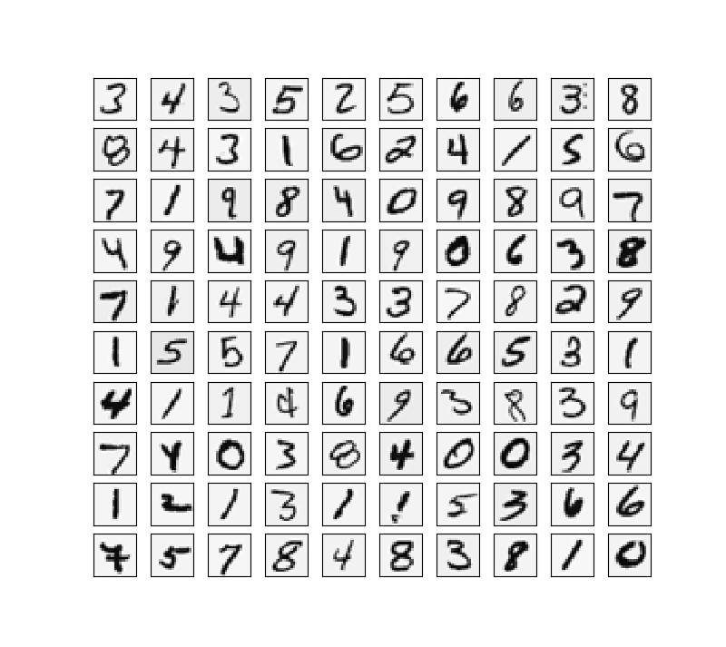
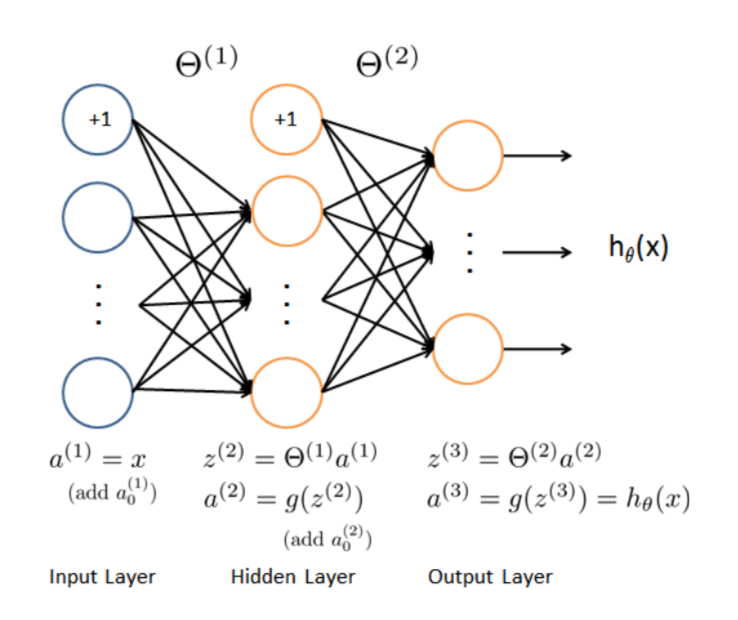
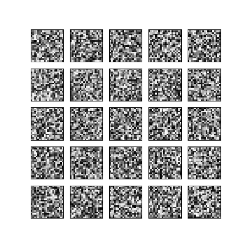

Neural Networks
Dataset and The initial value
数据集依旧是手写数字。
定义初始值并引入包：1
2
3
4
5
6
7
8from scipy.io import loadmat
import scipy.optimize as op
import numpy as np
input_layer_size = 400
hidden_layer_size = 25
num_labels = 10
l = 1
读取数据的方法同ex-3。1
2
3
4data_mat1 = loadmat('ex4data1.mat')
X = np.array(data_mat1['X'])
y = np.array(data_mat1['y'])
Visualizing the data
与ex-3不同，此处参考了github上的代码，发现更为合适。1
2
3
4
5
6
7
8
9
10
11
12
13def plot_100_image(X):
size = int(np.sqrt(X.shape[1]))
sample_idx = np.random.choice(np.arange(X.shape[0]), 100)
sample_images = X[sample_idx, :]
fig, ax_array = plt.subplots(nrows=10, ncols=10, sharey=True, sharex=True, figsize=(8, 8))
for r in range(10):
for c in range(10):
ax_array[r, c].matshow((sample_images[10 * r + c].reshape((size, size))).T,
cmap=plt.cm.binary)
plt.xticks(np.array([]))
plt.yticks(np.array([]))

Feedforward
前向传播的作用就相当于前面Logistic回归和线性回归中的假设函数（Hypothesis），如下图所示。

1 | def feedForward(Theta1, Theta2, X): #(25, 401),(10, 26) |
返回a1, z2, a2, z3, a3是为了获取反向传播算法需要用到的参数。
Cost function
The cost function for neural networks with regularization is given by
$J(\Theta)=\frac{1}{m}\displaystyle\sum^{m}_{i=1}\displaystyle\sum^{K}_{k=1}[-y^{(i)}_klog((h_\theta(x^{(i)}))_k)-(1-y^{(i)}_k)log(1-(h_\theta(x^{(i)}))_k)]+\frac{\lambda}{2m}\displaystyle\sum^{L-1}_{l=1}\displaystyle\sum^{s_l}_{i=1}\displaystyle\sum^{l+1}_{j=1}(\Theta^{(l)}_{i,j})^2$
1 | def nncostFunction(nn_params, X, y, l): |
Backpropagation
Sigmoid gradient
The gradient for the sigmoid function can be computed as:
$g^{‘}(z)=\frac{d}{dz}g(z)=g(z)(1-g(z))$
where
$sigmoid(z)=g(z)=\frac{1}{1+e^{-z}}$1
2
3
4
5def sigmoid(z):
return 1. / (1 + np.exp(-z))
def sigmoidGradient(z):
return sigmoid(z) * (1 - sigmoid(z))
Random initialization
随机生成初始化参数向量（权重）。$\Theta^{(l)}$的范围为$[-\epsilon_{init},\epsilon_{init}]$,此处另$\epsilon_{init}=0.12$。1
2
3
4
5
6def randInitializeWeight(input_layer_size, hidden_layer_size, num_labels):
epsilon_init = 0.12
W = np.random.uniform(0, 1, size = (input_layer_size+1) * \
hidden_layer_size +(hidden_layer_size + 1) * num_labels, )\
* 2 * epsilon_init - epsilon_init
return W
np.random.unifrom(0,1,size)函数是随机生成一个取值为[0,1]的size数组。
Backpropagation
我们的最终目的是为了找到$\Theta$来$minJ(\Theta)$，因此我们需要去计算出代价函数$J(\Theta)$和偏导$\frac{\partial}{\partial\Theta^{(l)}_{i,j}}J(\Theta)$，反向传播算法就是为了计算出$\frac{\partial}{\partial\Theta^{(l)}_{i,j}}J(\Theta)$，功能同Logistic回归和线性回归的梯度函数（gradient）。
我们另$\delta^{(l)}{j}$为第l层的底j个节点的误差，层数为$L$。
$\delta^{(L)}=a^{(L)}-y$
$\delta^{(L-1)}=(\Theta^{(L-1)})^T\delta^{(L)}.*g^{‘}(z^{(L-1)})$
$\delta^{(L-2)}=(\Theta^{(L-2)})^T\delta^{(L-1)}.*g^{‘}(z^{(L-2)})$
……
$\delta^{(2)}=(\Theta^{(2)})^T\delta^{(3)}.*g^{‘}(z^{(2)})$
注：此处.*为矩阵各个元素对应相乘，且$g^{‘}(z^{(L-1)})=a^{(L-1)}.*(1-a^{(L-1)})$，此处z应是添加了1
伪代码如下：
Training Set{$(x^{(1)},y^{(1)}),…,(x^{(m)},y^{(m)})$}
Set $\Delta^{(l)}_{i,j}=0$
For i=1 to m
Set $a^{(1)}=x^{(i)}$
Perform forward propagation to compute $a^{(l)}$ for l=2,3,…,L
Using $y^{(i)}$, compute $\delta^{(L)}-y^{(i)}$
Compute$\delta^{(L-1)},\delta^{(L-2)},…,\delta^{(2)}$
$\Delta^{(l)}_{ij}:=\Delta^{(l)}_{ij}+a^{l}_{j}\delta^{(l+1)}_{i}$
$D^{(l)}_{ij}:=\frac{1}{m}\Delta^{(l)}_{ij}+\lambda\Theta^{(l)}_{ij}$ if $j\neq0$
$D^{(l)}_{ij}:=\frac{1}{m}\Delta^{(l)}_{ij}$ if $j=0$
通过数学推导可得：$\frac{\partial}{\partial\Theta^{(l)}_{i,j}}J(\Theta)=D^{(l)}_{ij}$
注：此处y需要进行one_hot编码。
1 | def backpropagation(nn_params, X, y, l): |
Learning parameters using minimize
1 | def nn_train(X,y): |
设置最大的迭代次数为250次。
结果如下：1
2
3
4
5
6
7
8
9
10 fun: 0.33431033764051943
jac: array([ 1.80122733e-04, 2.91512941e-07, -2.41860480e-07, ...,
7.21952980e-05, 4.92183397e-06, -3.14373459e-05])
message: 'Max. number of function evaluations reached'
nfev: 250
nit: 20
status: 3
success: False
x: array([-1.10232549e+00, 1.45756471e-03, -1.20930240e-03, ...,
-5.52497298e+00, -1.97210589e+00, -1.52716817e+00])
代价函数为：0.33，这是一个不错的指标。
Predict
1 | def get_accuracy(y_pred, y): |
最后预测的准确率为：accuracy = 99.3%。
使用sklearn包来进行评价。1
2from sklearn.metrics import classification_report
print(classification_report(y, y_pred))
结果如下：1
2
3
4
5
6
7
8
9
10
11
12
13
14
15
16 precision recall f1-score support
1 0.99 0.99 0.99 500
2 0.99 0.99 0.99 500
3 0.99 0.98 0.99 500
4 0.99 0.99 0.99 500
5 0.99 1.00 1.00 500
6 1.00 0.99 1.00 500
7 0.99 0.99 0.99 500
8 0.99 1.00 0.99 500
9 0.99 0.98 0.98 500
10 0.99 1.00 0.99 500
accuracy 0.99 5000
macro avg 0.99 0.99 0.99 5000
weighted avg 0.99 0.99 0.99 5000
故已经成功实现基于反向传播的神经网络算法，用于实现手写数字识别。
Visualizing the hidden layer
1 | def plot_hidden_layer(theta): |
